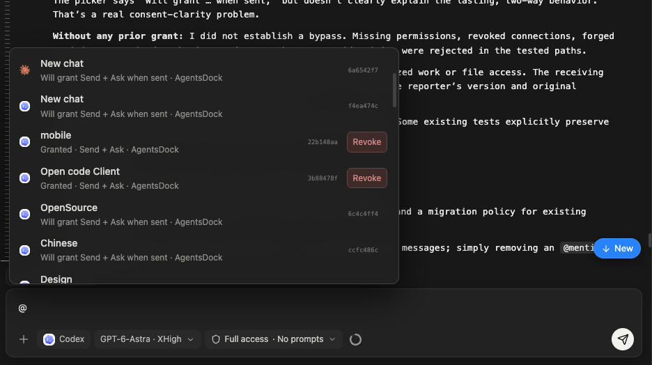
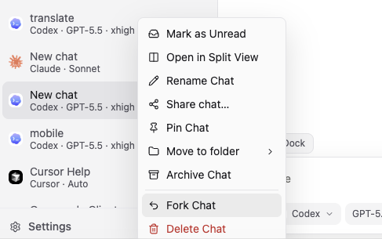

文档
主要功能
连接之后 AgentsDock 能为你做什么——桌面端和移动端完全一致。
从任何设备完整访问终端
从任何设备接入会话的持久 tmux 会话——桌面端和移动端是同一个 shell。
Agent 之间通话
用 @ 把另一个 agent 拉进会话并交给它一个任务——它在自己那边完成后回复你。
开始一段 agent 之间的通话
输入 @，选择你要联系的会话，然后发送。提及标签会标明你在对谁说话——它跨会话有效，甚至跨服务器也可以。
工作原理
你的消息会作为一次可追踪的消息交换送达。对方 agent 在它自己的机器上处理，然后直接回复到你的会话里，整个交接过程清晰可见——发给了谁、是否等待回复、何时过期。
第一条消息同时会建立一条持久连接：在 @ 选择器里，该会话会从发送后将授予 Send + Ask变为已授予 · Send + Ask，之后你可以持续给这个 agent 发消息，无需再次授权。
撤销访问

打开 @ 选择器，点击已连接会话旁的撤销（Revoke）。这会关闭连接，直到你再次 @ 它。每个会话能保持的连接数有限，请撤销不再需要的连接。
定时任务
排队间隔任务和周期任务，让耗时工作按时、无人值守地运行。
查看与编辑你的代码
直接在应用里浏览、预览和编辑远程机器上的文件。
你能打开的文件是会话工作目录下的文件——也就是远程机器上这个会话的 agent 工作的文件夹。创建会话时设置它，或随时在右侧的会话（Session）面板中修改。

恢复其他会话
把你在 AgentsDock 之外开始的 Claude Code 或 Codex 会话带进应用，完整保留历史和上下文。有两种方式。
我们建议你直接导入。
直接导入
从 / 菜单打开导入会话（Import chat），就能看到那台机器上所有的 Claude Code 和 Codex 会话——每条都带预览和时间戳。勾选想要的会话并点导入（Import），它们就会带着完整历史进入 AgentsDock——包括完全在应用之外进行的对话。
使用 Resume ID 导入
每个 Claude Code 或 Codex 会话都有一个会话 ID——也就是它的 Resume ID。选择按会话 ID 恢复（Resume by session ID），粘贴 ID，AgentsDock 就会在应用里恢复那段对话，完整保留历史和上下文，让你能从任何设备接着聊。它适用于你在 AgentsDock 之外开始的会话，而不只是应用内新建的。
斜杠命令
在输入框输入 /，调出会话里能做的一切——命令和技能，尽在一个快捷菜单。
按下 /，输入框正上方会弹出命令面板：附加文件、引用另一个会话、发送反馈、切换模型、管理 MCP 服务器、新建会话等。用方向键移动，Enter 执行，Esc 关闭。
目前支持一组精选的斜杠命令，更多技能正在路上——菜单会不断增长，值得时常看看 / 里有什么。
Fork 任意会话
一键把任意会话分出一个分支去尝试新方向——原会话保持不变。
想探索另一种思路又不想丢掉当前的进展？fork 这个会话，AgentsDock 会把完整历史复制到一个新分支，你可以随意发展——而原会话原封不动。非常适合尝试不同的提示词、跑消融实验，或把有风险的改动和已经可用的版本并排测试。
